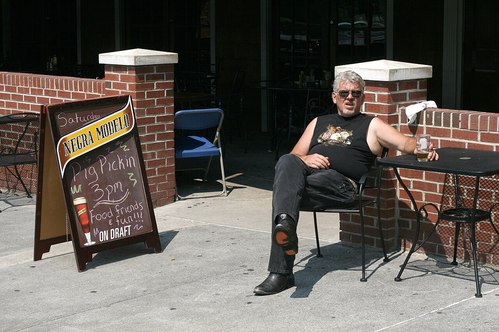
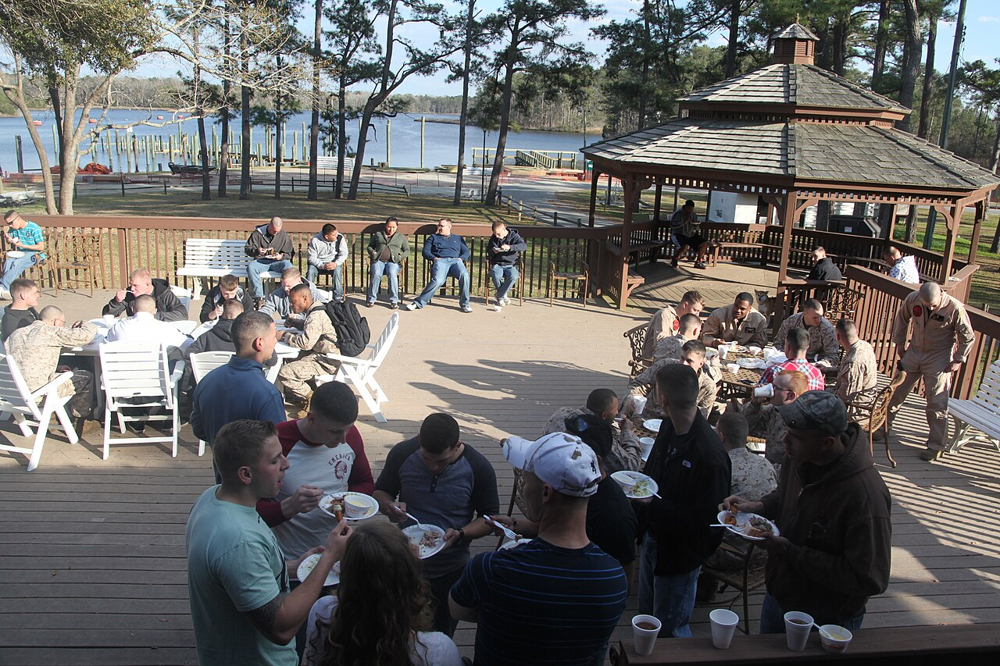
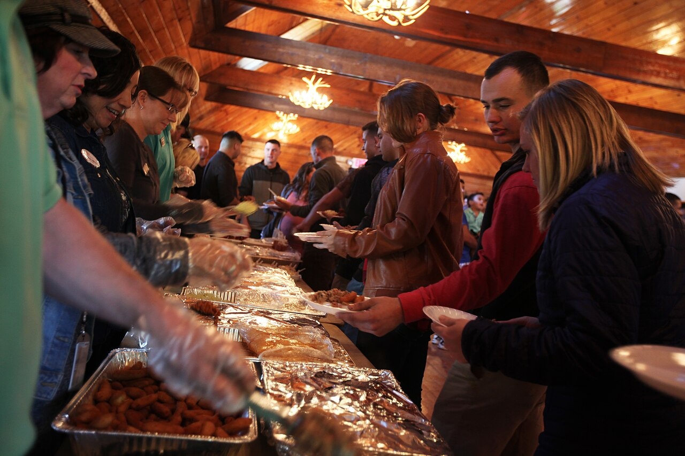

an eventpig pickin'
also: pig picking · pig pickin · pig pull · rolling a pig · hog roast
Always with the g dropped, as in the Wikipedia article's own title.

A party at which a whole hog is cooked for the crowd and the crowd eats it off the pig — picked by hand from the split carcass, or chopped on a block beside it. A barrow, a castrated male, or a gilt of about 80 to 120 pounds dressed weight is split and laid on a large charcoal or propane cooker for four to eight hours, under the direction of the host and whoever is helping; the meat is basted or dressed in the local sauce and served with slaw, hush puppies, baked beans, Brunswick stew or, in South Carolina, hash and rice. It is the eastern Carolinas' form of the wedding, the homecoming, the tailgate, the political rally and the fire-department fundraiser.
Pig pull and hog roast name the same event elsewhere; pig roast is the wider term, used of the Cuban, Filipino and Hawaiian roasts, which are other traditions. Kingstree, South Carolina, calls its fall cook-off the Pig Pickin' Festival. Cited · wp-pig-pickin
The story Cited · wp-pig-pickin
The whole-hog feast is older than the name. Communal barbecues of whole pigs spread from Virginia into the Carolinas in the mid-1700s and fed church gatherings, fundraisers and political rallies; George Washington wrote of attending a barbecue on August 4, 1769. The pig pickin' is that feast on a trailer cooker. Its year is the church's and the college's: 'dinner on the grounds', family reunions, Thanksgiving and Christmas, graduations and weddings, and the tailgate — East Carolina University in Greenville has run a pig pickin' contest, the Pigskin Pig-Out, since 1985. Politics keeps it: local parties and candidates still use a pig pickin' to draw a crowd, and in 1983 Rufus Edmisten, running for governor of North Carolina, was overheard saying he had eaten enough barbecue, would eat no more, and was taking his stand. Ed Mitchell's first hog was a family pickin' in Wilson: at fourteen or fifteen he tended the fire after the men, having passed the moonshine, fell asleep, and his grandfather woke to a cooked pig and poured him a glass. Kingstree, in the Pee Dee, holds a Pig Pickin' Festival each fall for the vinegar-based barbecue of Williamsburg County; seventy teams competed in 2010. The name is the one thing the article is sure of: the meat is picked off the hog by the guests, and the gathering is named for it.
How it is done Cited · wp-pig-pickin
The host borrows or rents a cooker, buys a dressed hog, and lights charcoal or gas the morning of, or the night before for a big pig. The hog goes on meat-side down and is flipped once when it stops dripping fat; some cooks wipe the ash from the skin with paper towels or a whisk broom before the flip so the cracklings come out clean. The baste is the region's: mustard in the South Carolina Midlands, vinegar and red pepper flakes in eastern North Carolina, a ketchup base in the west. When the meat falls from the bone the pig is carried to the table and the guests pick, or a cook chops it at the block; sweet tea, beer and soft drinks alongside.
Today Cited · wp-pig-pickin
Held year-round in a mild climate; cookers are rented by the weekend across the Coastal Plain, the tailgate pickin' is a college-football fixture, and Kingstree's festival and ECU's Pigskin Pig-Out put it on a calendar.
Facts
| state | both |
|---|---|
| when | any month; homecomings, tailgates, weddings, rallies |
| status | open |
| styles | Eastern North Carolina barbecue, Pee Dee whole-hog barbecue |
| region | Eastern North Carolina, The Pee Dee, The Carolinas |
| links | Pig pickin' — Wikipedia · Pig roast — Wikipedia (the wider term) |
| confidence | high · updated 2026-09-15 |
Not to be confused with
- hog killing — A pig pickin' cooks one pig for one crowd; a hog killing butchers the year's meat in winter.
- whole hog — Whole hog is the cut and the method; the pig pickin' is the party.
Its kin
Who points back
Pictures
{kind=link}

{kind=link}

{kind=link}
![The same cooking trench from the other end and further back: a long line of split pigs laid flat on the coals, running from the bottom of the frame up a low rise. A dozen people stand at the far end beside a white canvas awning stretched on poles, some in wide hats; a man walks towards the camera along the edge of the trench. A tall tree at the right, a hedgerow along the horizon, and an open field beyond. Sepia print mounted on card, its lower margin printed with the word Subject and a ruled line.](../../images/pig-pickin/pig-pickin-pigs-on-the-trench-tarboro-1898.jpg)
Sources
- Pig pickin' — Wikipedia · link
- Pig roast — Wikipedia · link
- Whole hog barbecue — Wikipedia · link
- Ed Mitchell (pitmaster) — Wikipedia · link
- Kingstree, South Carolina — Wikipedia · link
- NCpedia — Barbecue (Encyclopedia of North Carolina) · link
- Lena Martin Photograph Collection — Lena Pennington Martin (1877-1950) · link
- DigitalNC · link
Where it came from: Cited a source we name · Harvested pulled from an open dataset · Tradition what the tradition says, hedged · Inference this project's reasoning · Field somebody stood there. This record as JSON.